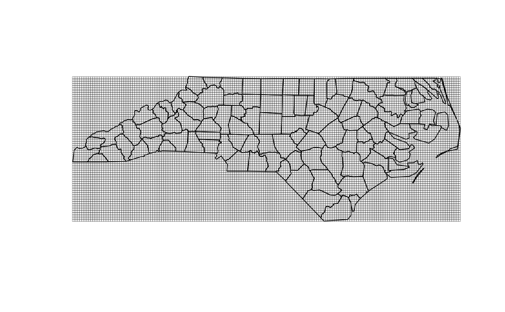

Creates cell geometry from vectors of X and Y positions.
create_cell_geometry(
X_coords,
Y_coords,
prj,
geom = NULL,
buffer_dist = 0,
regularize = FALSE,
eps = 1e-10
)numeric center positions of X axis indices
numeric center positions of Y axis indices
character proj4 string for x and y
sf data.frame with geometry that cell geometry should cover
numeric a distance to buffer the cell geometry in units of geom projection
boolean if TRUE, grid spacing will be adjusted to be exactly equal. Only applies to 1-d coordinates.
numeric sets tolerance for grid regularity.
Intersection is performed with cell centers then geometry is constructed. A buffer may be required to fully cover geometry with cells.
nc <- RNetCDF::open.nc(system.file("extdata/metdata.nc", package = "ncdfgeom"))
ncmeta::nc_vars(nc)
#> # A tibble: 4 × 5
#> id name type ndims natts
#> <int> <chr> <chr> <int> <int>
#> 1 0 precipitation_amount NC_FLOAT 3 6
#> 2 1 day NC_DOUBLE 1 6
#> 3 2 lat NC_DOUBLE 1 5
#> 4 3 lon NC_DOUBLE 1 5
variable_name <- "precipitation_amount"
cv <- ncmeta::nc_coord_var(nc, variable_name)
x <- RNetCDF::var.get.nc(nc, cv$X, unpack = TRUE)
y <- RNetCDF::var.get.nc(nc, cv$Y, unpack = TRUE)
prj <- ncmeta::nc_gm_to_prj(ncmeta::nc_grid_mapping_atts(nc))
#> Warning: No variables with a grid mapping found.
#> Defaulting to WGS84 Lon/Lat
geom <- sf::read_sf(system.file("shape/nc.shp", package = "sf"))
geom <- sf::st_transform(geom, 5070)
cell_geometry <- create_cell_geometry(x, y, prj, geom, 0)
plot(sf::st_geometry(cell_geometry), lwd = 0.25)
plot(sf::st_transform(sf::st_geometry(geom), prj), add = TRUE)
